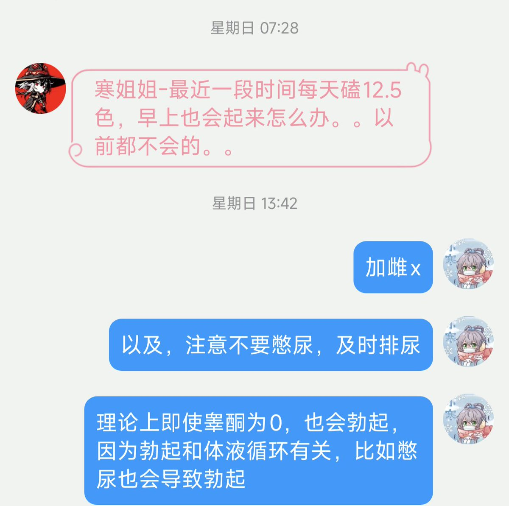

小虚空🍥
@tokerumaisurii
@HANLIANYI331 每天12.5毫克只要没忘记吃E2就很稳定压住了，但是还没有试过每天6.25毫克，因为切的话不好切，两天吃一次的话要记昨天吃了没吃心力消耗太大）

寒涟漪
@HANLIANYI331
目前仍然有mtf因为受到无良药商蛊惑每天吃50毫克的色普龙，实际上推荐剂量是每2天12.5毫克（平均每天6.25毫克）再次再次强调！ https://t.co/44laGnlPnb https://t.co/gG46wKuL2D